Flip sheet 2026-10-30 — OFF | ON | pro
Layout flags built OFF, each rendered where it changes stitches beside the professional's file for the same job (hat preset at the pro's width). 40 px/mm: a 0.4 mm thread is 16 px. The flips are Kent's.
| flag (PR) | fixture | OFF | ON | pro | needle points changed |
|---|---|---|---|---|---|
seam_order_read (#1198, LAYOUT) | becker_beanie | 13,652 st / 12 tr / 2 cc / 4 / 12 | 13,915 st / 14 tr / 2 cc / 6 / 14 | 11,412 st / 48 tr / 5 cc / 0 / 4 | 599 |
seam_order_read (#1198, LAYOUT) | precision_drone | 14,506 st / 87 tr / 9 cc / 14 / 87 | 14,778 st / 93 tr / 9 cc / 22 / 93 | 14,552 st / 59 tr / 22 cc / 20 / 58 | 2,986 |
seam_order_read (#1198, LAYOUT) | mfab_lc | 18,702 st / 25 tr / 2 cc / 18 / 25 | 18,735 st / 21 tr / 2 cc / 14 / 21 | 15,786 st / 20 tr / 4 cc / 3 / 19 | 1,531 |
knockdown_shorter_walk (#1202, LAYOUT) | becker_beanie | 13,915 st / 14 tr / 2 cc / 6 / 14 | 13,864 st / 14 tr / 2 cc / 6 / 14 | 11,412 st / 48 tr / 5 cc / 0 / 4 | 93 |
knockdown_shorter_walk (#1202, LAYOUT) | proseal_beanie | 8,107 st / 28 tr / 5 cc / 7 / 28 | 8,107 st / 28 tr / 5 cc / 7 / 28 | 7,117 st / 48 tr / 5 cc / 16 / 47 | none (no change) |
fill_seam_order_priced (#1202, LAYOUT) | precision_drone | 14,778 st / 93 tr / 9 cc / 22 / 93 | 14,769 st / 86 tr / 9 cc / 14 / 86 | 14,552 st / 59 tr / 22 cc / 20 / 58 | 2,171 |
fill_seam_order_priced (#1202, LAYOUT) | mfab_lc | 18,735 st / 21 tr / 2 cc / 14 / 21 | 18,581 st / 22 tr / 2 cc / 15 / 22 | 15,786 st / 20 tr / 4 cc / 3 / 19 | 2,328 |
fill_seam_order_priced (#1202, LAYOUT) | mfab_hat | 21,321 st / 25 tr / 2 cc / 18 / 25 | 21,389 st / 29 tr / 2 cc / 21 / 29 | 17,568 st / 19 tr / 4 cc / 3 / 18 | 3,952 |
fill_seam_order_priced (#1202, LAYOUT) | becker_lc_large | 14,669 st / 15 tr / 1 cc / 6 / 15 | 14,922 st / 12 tr / 1 cc / 3 / 12 | 11,274 st / 12 tr / 3 cc / 2 / 11 | 689 |
fill_seam_order_priced (#1202, LAYOUT) | becker_hat_small | 10,452 st / 11 tr / 1 cc / 4 / 11 | 10,546 st / 11 tr / 1 cc / 4 / 11 | 8,694 st / 11 tr / 4 cc / 2 / 10 | 718 |
fill_seam_order_priced (#1202, LAYOUT) | proseal_hat | 6,347 st / 36 tr / 4 cc / 9 / 36 | 6,344 st / 38 tr / 4 cc / 13 / 38 | 5,894 st / 54 tr / 4 cc / 12 / 53 | 293 |
seam_order_read (PR #1198) LAYOUT
LAYOUT: judged from these renders (Kent 2026-10-22). Sets {"photo_prep_background_removal_timeout_s": 900}.
| fixture | engine | OFF | ON | pro | change | travel OFF (mm) | travel ON (mm) |
|---|---|---|---|---|---|---|---|
| becker_beanie | engine 6e1e8555 | 13,652 st · 12 tr · 2 cc | 13,915 st · 14 tr · 2 cc | 11,412 st · 48 tr · 5 cc | 599 points | exp 38.6 · bare 3.72/0.40/0.00 · off-body 0.0 | exp 105.8 · bare 14.84/0.00/0.00 · off-body 3.0 |
| precision_drone | engine 6e1e8555 | 14,506 st · 87 tr · 9 cc | 14,778 st · 93 tr · 9 cc | 14,552 st · 59 tr · 22 cc | 2,986 points | exp 20.0 · bare 2.54/2.12/1.27 · off-body 0.0 | exp 23.6 · bare 2.20/1.79/0.95 · off-body 0.0 |
| mfab_lc | engine 6e1e8555 | 18,702 st · 25 tr · 2 cc | 18,735 st · 21 tr · 2 cc | 15,786 st · 20 tr · 4 cc | 1,531 points | exp 38.7 · bare 0.00/0.00/0.00 · off-body 0.0 | exp 19.8 · bare 0.00/0.00/0.00 · off-body 0.0 |
seam_order_read (PR #1198) · becker_beanie at 79.8 mm · engine 6e1e8555
⚠ The flip read backwards: OFF pins fill_seam_order False, ON is the shipped engine (ON since #1198). Becker beanie and the drone are the rows that went the wrong way; MFab LC is the gain to keep.
cuts inside one piece / all cuts. 599 needle points differ, 90 in this 18 x 11 mm crop at [-8.6, -16.6, 9.4, -5.6] mm (plan frame). Sets {"photo_prep_background_removal_timeout_s": 900}.
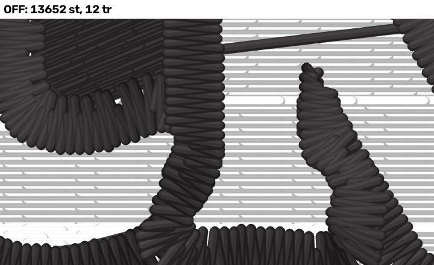
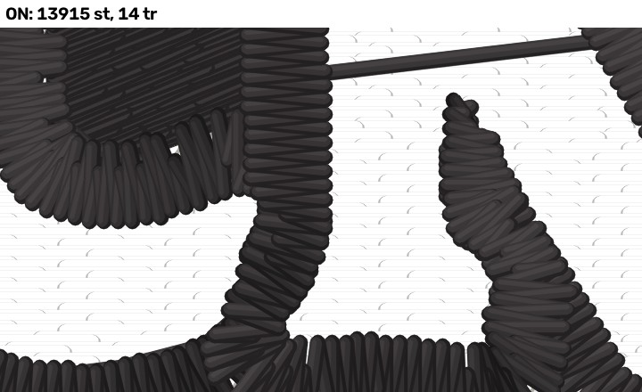

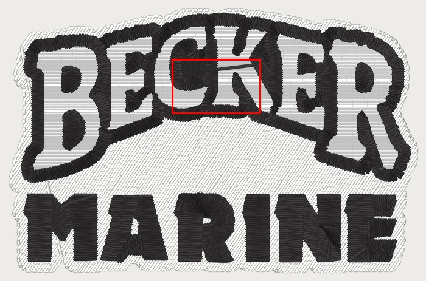
seam_order_read (PR #1198) · precision_drone at 62.6 mm · engine 6e1e8555
⚠ The flip read backwards: OFF pins fill_seam_order False, ON is the shipped engine (ON since #1198). Becker beanie and the drone are the rows that went the wrong way; MFab LC is the gain to keep.
cuts inside one piece / all cuts. 2,986 needle points differ, 518 in this 18 x 11 mm crop at [11.3, -27.0, 29.3, -16.0] mm (plan frame). Sets {"photo_prep_background_removal_timeout_s": 900}.
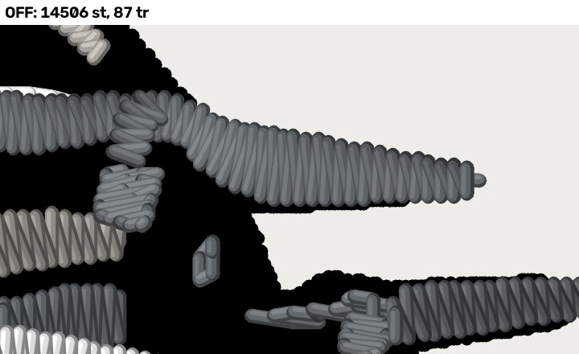
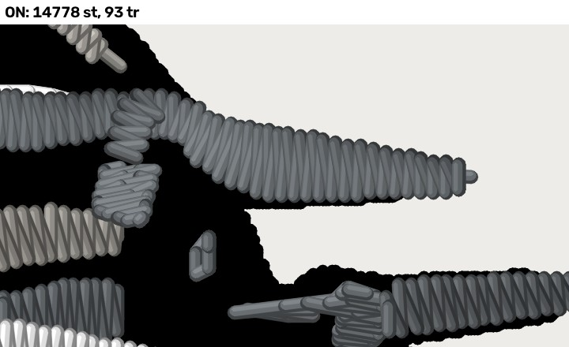

seam_order_read (PR #1198) · mfab_lc at 96.7 mm · engine 6e1e8555
⚠ The flip read backwards: OFF pins fill_seam_order False, ON is the shipped engine (ON since #1198). Becker beanie and the drone are the rows that went the wrong way; MFab LC is the gain to keep.
cuts inside one piece / all cuts. 1,531 needle points differ, 500 in this 18 x 11 mm crop at [27.5, -2.1, 45.5, 8.9] mm (plan frame). Sets {"photo_prep_background_removal_timeout_s": 900}.
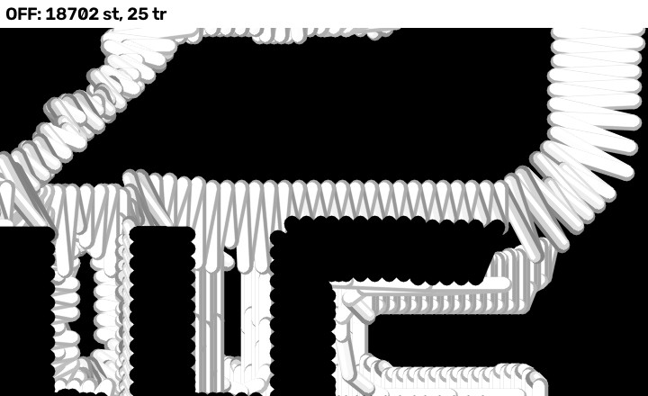

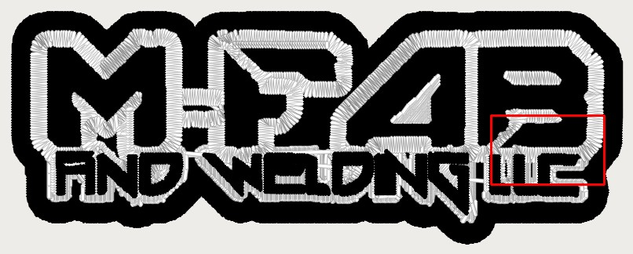
knockdown_shorter_walk (PR #1202) LAYOUT
LAYOUT: judged from these renders (Kent 2026-10-22). Sets {"photo_prep_background_removal_timeout_s": 900, "knockdown_shorter_walk": true}.
| fixture | engine | OFF | ON | pro | change | travel OFF (mm) | travel ON (mm) |
|---|---|---|---|---|---|---|---|
| becker_beanie | engine 6e1e8555 | 13,915 st · 14 tr · 2 cc | 13,864 st · 14 tr · 2 cc | 11,412 st · 48 tr · 5 cc | 93 points | exp 105.8 · bare 14.84/0.00/0.00 · off-body 3.0 | exp 38.6 · bare 3.72/0.40/0.00 · off-body 0.0 |
| proseal_beanie | engine 6e1e8555 | 8,107 st · 28 tr · 5 cc | 8,107 st · 28 tr · 5 cc | 7,117 st · 48 tr · 5 cc | none | exp 150.5 · bare 100.25/0.00/0.00 · off-body 6.7 | exp 150.5 · bare 100.25/0.00/0.00 · off-body 6.7 |
knockdown_shorter_walk (PR #1202) · becker_beanie at 79.8 mm · engine 6e1e8555
⚠ The beanie knockdown sewn with and without seam order, the shorter walk kept. ProSeal beanie is the control: its walk is shorter WITH seam order, so a blanket skip would have cost it 147 mm of exposed travel.
cuts inside one piece / all cuts. 93 needle points differ, 22 in this 18 x 11 mm crop at [-32.6, 16.3, -14.6, 27.3] mm (plan frame). Sets {"photo_prep_background_removal_timeout_s": 900, "knockdown_shorter_walk": true}.
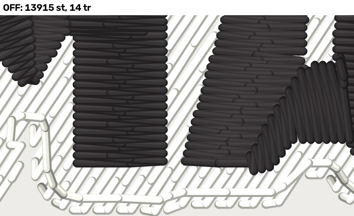
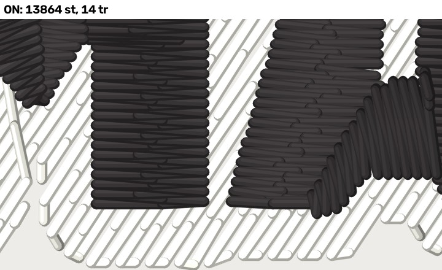

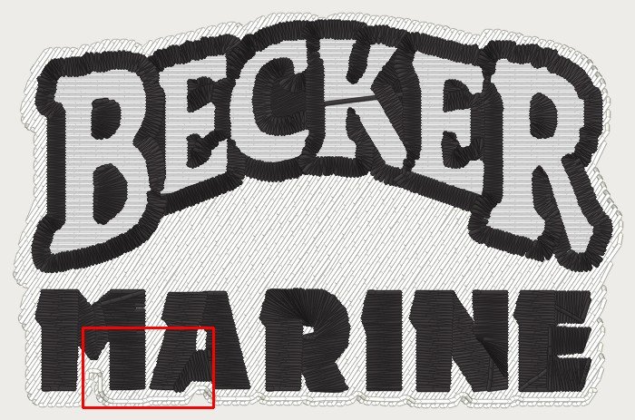
knockdown_shorter_walk (PR #1202) · proseal_beanie at 75.0 mm · engine 6e1e8555
⚠ The beanie knockdown sewn with and without seam order, the shorter walk kept. ProSeal beanie is the control: its walk is shorter WITH seam order, so a blanket skip would have cost it 147 mm of exposed travel.
No change on this fixture (byte-identical DST).
fill_seam_order_priced (PR #1202) LAYOUT
LAYOUT: judged from these renders (Kent 2026-10-22). Sets {"photo_prep_background_removal_timeout_s": 900, "fill_seam_order_priced": true}.
| fixture | engine | OFF | ON | pro | change | travel OFF (mm) | travel ON (mm) |
|---|---|---|---|---|---|---|---|
| precision_drone | engine 6e1e8555 | 14,778 st · 93 tr · 9 cc | 14,769 st · 86 tr · 9 cc | 14,552 st · 59 tr · 22 cc | 2,171 points | exp 23.6 · bare 2.20/1.79/0.95 · off-body 0.0 | exp 22.0 · bare 2.54/2.12/1.27 · off-body 0.0 |
| mfab_lc | engine 6e1e8555 | 18,735 st · 21 tr · 2 cc | 18,581 st · 22 tr · 2 cc | 15,786 st · 20 tr · 4 cc | 2,328 points | exp 19.8 · bare 0.00/0.00/0.00 · off-body 0.0 | exp 10.8 · bare 0.00/0.00/0.00 · off-body 0.0 |
| mfab_hat | engine 6e1e8555 | 21,321 st · 25 tr · 2 cc | 21,389 st · 29 tr · 2 cc | 17,568 st · 19 tr · 4 cc | 3,952 points | exp 6.0 · bare 0.00/0.00/0.00 · off-body 0.0 | exp 7.9 · bare 0.00/0.00/0.00 · off-body 0.0 |
| becker_lc_large | engine 6e1e8555 | 14,669 st · 15 tr · 1 cc | 14,922 st · 12 tr · 1 cc | 11,274 st · 12 tr · 3 cc | 689 points | exp 31.1 · bare 0.40/0.20/0.10 · off-body 0.0 | exp 31.1 · bare 0.40/0.20/0.10 · off-body 0.0 |
| becker_hat_small | engine 6e1e8555 | 10,452 st · 11 tr · 1 cc | 10,546 st · 11 tr · 1 cc | 8,694 st · 11 tr · 4 cc | 718 points | exp 21.7 · bare 4.61/3.69/3.28 · off-body 0.0 | exp 21.7 · bare 4.61/3.69/3.28 · off-body 0.0 |
| proseal_hat | engine 6e1e8555 | 6,347 st · 36 tr · 4 cc | 6,344 st · 38 tr · 4 cc | 5,894 st · 54 tr · 4 cc | 293 points | exp 17.8 · bare 1.56/1.14/0.61 · off-body 0.0 | exp 13.7 · bare 1.56/1.14/0.61 · off-body 0.0 |
fill_seam_order_priced (PR #1202) · precision_drone at 62.6 mm · engine 6e1e8555
⚠ Seam order's two progressions: fewer ridges and flips first, _score settling a tie, instead of the shorter flown chord.
cuts inside one piece / all cuts. 2,171 needle points differ, 510 in this 18 x 11 mm crop at [11.8, -26.3, 29.8, -15.3] mm (plan frame). Sets {"photo_prep_background_removal_timeout_s": 900, "fill_seam_order_priced": true}.
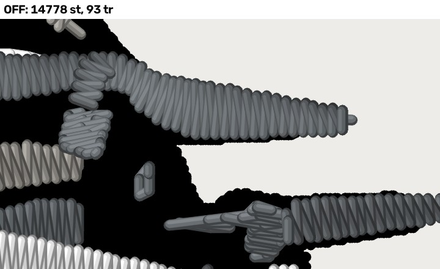

fill_seam_order_priced (PR #1202) · mfab_lc at 96.7 mm · engine 6e1e8555
⚠ Seam order's two progressions: fewer ridges and flips first, _score settling a tie, instead of the shorter flown chord.
cuts inside one piece / all cuts. 2,328 needle points differ, 307 in this 18 x 11 mm crop at [2.5, -18.5, 20.5, -7.5] mm (plan frame). Sets {"photo_prep_background_removal_timeout_s": 900, "fill_seam_order_priced": true}.

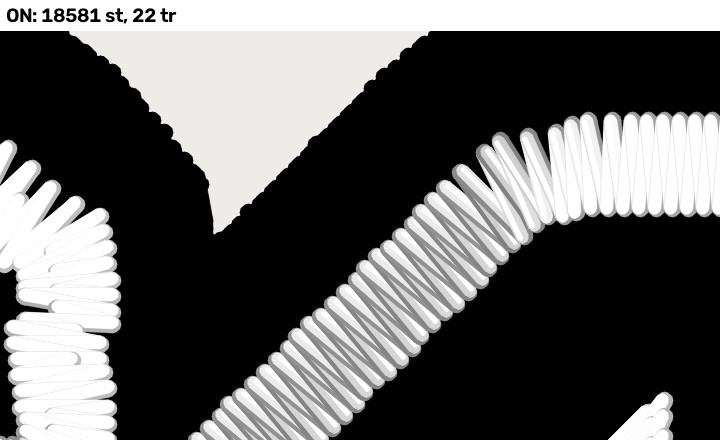

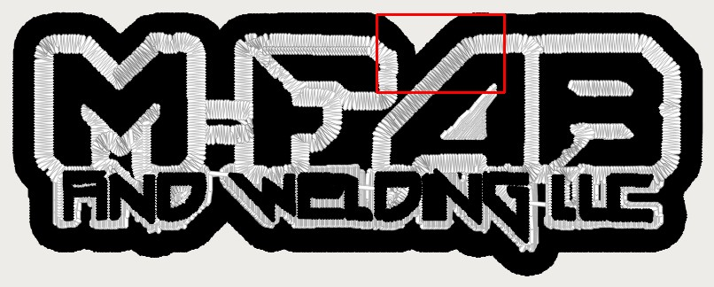
fill_seam_order_priced (PR #1202) · mfab_hat at 104.9 mm · engine 6e1e8555
⚠ Seam order's two progressions: fewer ridges and flips first, _score settling a tie, instead of the shorter flown chord.
cuts inside one piece / all cuts. 3,952 needle points differ, 386 in this 18 x 11 mm crop at [32.2, 5.8, 50.2, 16.8] mm (plan frame). Sets {"photo_prep_background_removal_timeout_s": 900, "fill_seam_order_priced": true}.

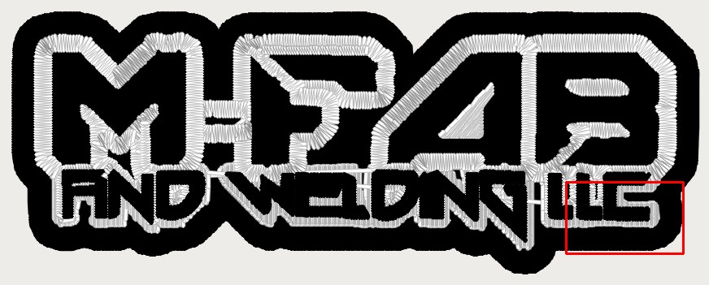
fill_seam_order_priced (PR #1202) · becker_lc_large at 95.7 mm · engine 6e1e8555
⚠ Seam order's two progressions: fewer ridges and flips first, _score settling a tie, instead of the shorter flown chord.
cuts inside one piece / all cuts. 689 needle points differ, 154 in this 18 x 11 mm crop at [-28.1, -29.6, -10.1, -18.6] mm (plan frame). Sets {"photo_prep_background_removal_timeout_s": 900, "fill_seam_order_priced": true}.
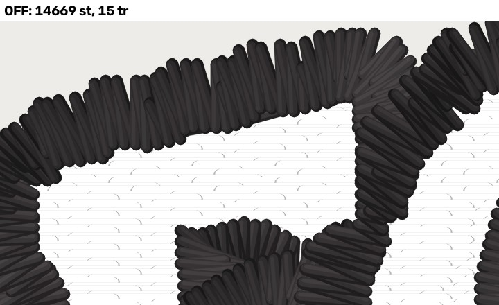
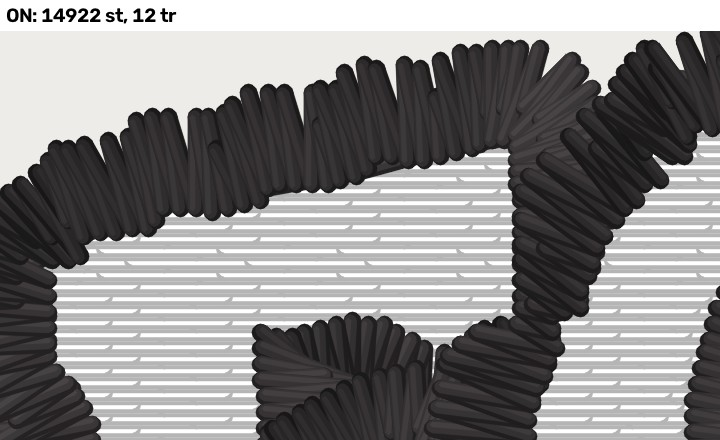

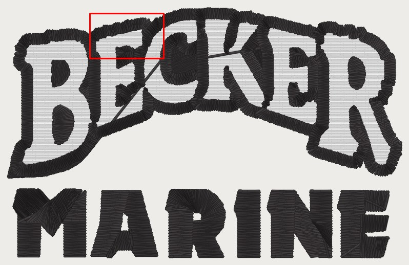
fill_seam_order_priced (PR #1202) · becker_hat_small at 76.5 mm · engine 6e1e8555
⚠ Seam order's two progressions: fewer ridges and flips first, _score settling a tie, instead of the shorter flown chord.
cuts inside one piece / all cuts. 718 needle points differ, 180 in this 18 x 11 mm crop at [-18.5, -21.8, -0.5, -10.8] mm (plan frame). Sets {"photo_prep_background_removal_timeout_s": 900, "fill_seam_order_priced": true}.
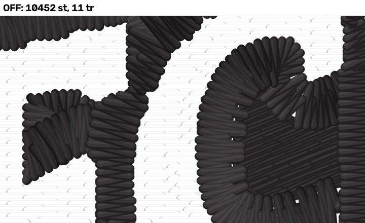
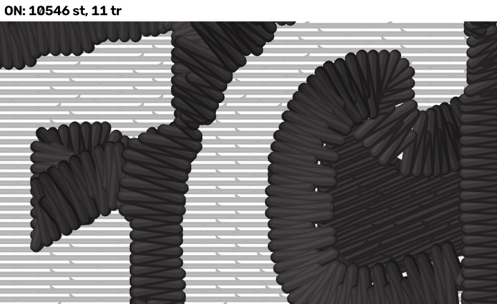

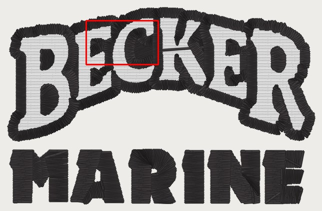
fill_seam_order_priced (PR #1202) · proseal_hat at 85.9 mm · engine 6e1e8555
⚠ Seam order's two progressions: fewer ridges and flips first, _score settling a tie, instead of the shorter flown chord.
cuts inside one piece / all cuts. 293 needle points differ, 135 in this 18 x 11 mm crop at [-27.0, -9.7, -9.0, 1.3] mm (plan frame). Sets {"photo_prep_background_removal_timeout_s": 900, "fill_seam_order_priced": true}.
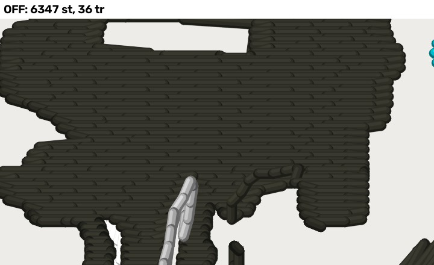
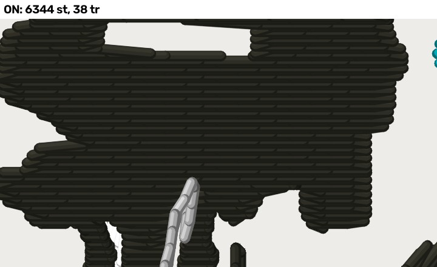